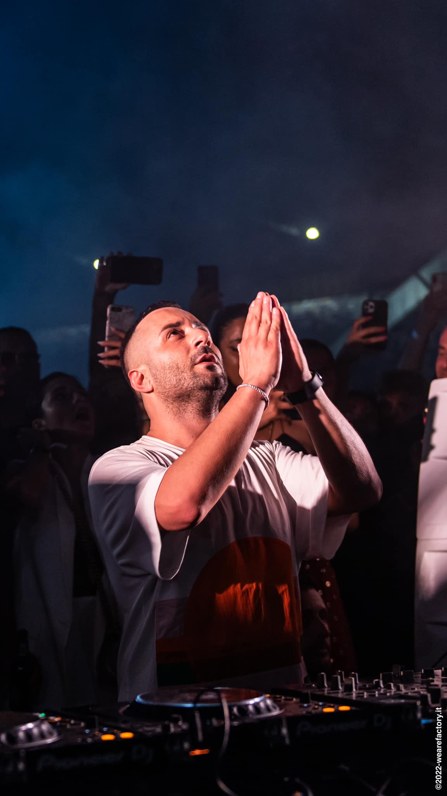

Joseph Capriati nació en 1987 y es otra de esas nuevas figuras surgidas de la escena del sur de Italia (en concreto, Caserta). Descubre el techno allá por 2003, tras asistir a un evento con Dave Clarke y Billy Nasty. Comienza a hacer sus pinitos con un ordenador hasta sus primeras publicaciones en 2007, "C’est La Vie" y "Microbiotik". A partir de ahí aumenta la proyeccción de Capriati en todo el mundo. La pasión y la convicción de Joseph están a la vista en la forma en que ha hecho y tocado música. Ya sea teniendo la confianza para lanzar un álbum debut de canciones ambientales y drum & bass, o la disciplina y la libertad creativa que convenció a Adam Beyer para publicar dos nutridos EPs en su sello Drumcode, o la versatilidad y la perspicacia que caracteriza a Josephs en sus DJ sets y le permite conectar con las multitudes de Europa, América del Sur, Asia, América del Norte y Sudáfrica.